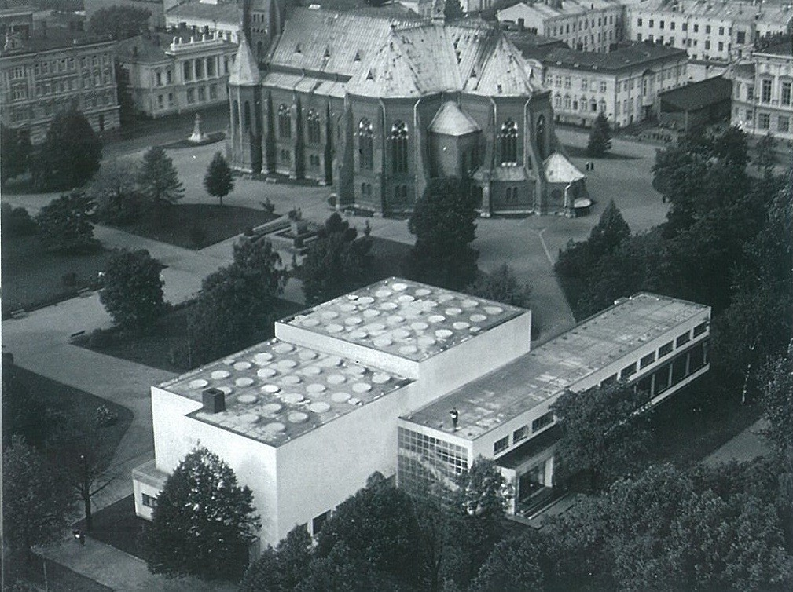
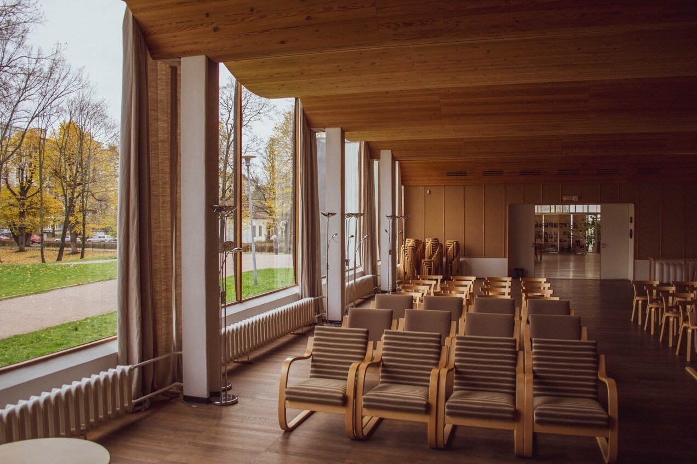

Библиотека Алвара Аалто
Центральная городская библиотека Выборга построена в 1933—1935 годах по проекту финского архитектора Алвара Аалто. Это один из первых проектов Аалто, принесших архитектору мировую известность.
«Задача состояла в проектировании двух основных частей: собственно библиотеки с ее различными отделами и группы помещений широкого общественного назначения – для лекций и работы разных кружков... Здесь и книгохранилище и читальные залы. Поэтому центральная часть здания решена в виде замкнутого объема, изолированного от внешнего воздействия. В основе архитектурного решения этой части – создание оптимальных условий освещения, отвечающей гигиене зрения, а также разработка систем отопления и вентиляции» – писал Аалто.

Архитектура
Здание считается вехой в творчестве архитектора, ибо обозначает переход Аалто от национально окрашенного неоклассицизма к упрощённым формам регионального модернизма. Именно здесь впервые проявилась уникальная черта его архитектурного стиля — сочетание строгости функционализма и нежной плавности природных линий. Начиная с Выборгской библиотеки творческая манера Аалто тяготеет к использованию естественных материалов и, в особенности, дерева. Сенсацию в архитектурном мире вызвал волнообразный акустический потолок лекционного зала, обрушившийся в послевоенные годы, когда здание библиотеки пустовало. В настоящее время потолок восстановлен по оригинальным чертежам. В потолке читального зала устроены круглые окна, через которые поступает солнечный свет, при этом стены зала окон не содержат.
История библиотеки
Строительство библиотеки началось в 1927 году на средства, которые завещала вдова выборгского мецената Юхо Лаллукка, состоятельная горожанка Мария Лаллукка. 13 октября 1935 года произошло торжественное её открытие. Вскоре библиотека стала известна во всём мире как эталон библиотечного здания.
Здесь Алвар Аалто смог учесть все особенности важные для этой сферы деятельности: режимы хранения книг, особенности работы библиотекарей, и, конечно, потребности читателей. Уникален волнообразный потолок читального зала, который является отличительной особенностью архитектурного стиля Алвара Аалто. Самостоятельно разработанная им система бестеневого освещения библиотеки, с помощью воронкообразных светильников.
Библиотека просуществовала в своём первозданном виде до 1939 года. Между Советским Союзом и Финляндией началась война, и в 1940 году Выборг заняли советские войска. В те годы библиотека была укомплектована шведской, финской, немецкой литературой, но после войны оказалась пустой и поменяла свой статус, став филиалом Государственной публичной библиотеки им. Салтыкова-Щедрина. Её собрания пополнились книгами на русском языке, которые до сих пор сохранились в фондах. В 1944 году Выборг снова вошёл в состав Советского Союза. В условиях послевоенной разрухи библиотека на долгое время оказалась заброшенной. Для того, чтобы местные жители смогли вновь пользоваться услугами библиотеки, требовалась её реконструкция, деньги на которую появились лишь в 1954 году, в библиотеке были проведены восстановительные работы. Но отсутствие у реставраторов оригинальных чертежей и необходимых материалов не позволило восстановить это здание в его исходном виде.
В 1961 году библиотека вновь открылась для посетителей, но изменила своё название на «Центральную городскую библиотеку им. Н. К. Крупской». Выходящая на библиотеку Болотная улица была переименована в Библиотечную (с 2001 года — улица Кеппа).
В перестроечные годы финансирование библиотеки практически прекратилось. Но благодаря открытию нескольких филиалов петербургских ВУЗов, круг читателей значительно расширился. Для поддержания существования библиотеки пришлось ввести платный абонемент, но со временем надобность в нём отпала, и библиотека стала вновь свободной для посещения. В 1998 году библиотека приобрела своё современное название — «Центральная городская библиотека Алвара Аалто в Выборге».
Помимо архитектурных особенностей библиотека имеет уникальную книжную коллекцию: например, собрание отдела краеведческой литературы, который формировался — и продолжает формироваться — на основе фонда, подаренного библиотекой финского города Лаппеенранта. Это книги о Выборге и Карелии на финском, шведском, немецком и других языках. За годы реставрации здания библиотеки это собрание пополнилось, возможно, самой цельной в России подборкой книг о творчестве Алвара Аалто и о самом здании библиотеки. Среди них, например, трёхтомник биографа Алвара Аалто Горана Шильдта с автографом автора.
Реставрация
Здание не подверглось значительным разрушениям во время Второй мировой войны, однако было заброшено в течение десяти лет после ее окончания и за счет этого серьезно пострадало. В 1955–1961 годах была проведена реконструкция библиотеки, которая остановила процесс обветшания, однако нанесла еще больший ущерб оригинальной архитектуре Аалто. Архитекторы Евгений Розенблюм и Александр Швер, работавшие над проектом реконструкции, к сожалению, не имели доступа к авторским чертежам и, кроме того, были ограничены в выборе мебели и отделочных материалов — приходилось пользоваться тем, что было доступно на советских заводах.
В 1992 году Клуб Алвара Аалто и Министерство окружающей среды Финляндии начали кампанию за восстановление выборгской библиотеки. Через три года библиотека вошла в список федеральных памятников, находящихся под охраной государства. На протяжении почти 20 лет в библиотеке велись небольшие восстановительные работы, возможные благодаря пожертвованиям российских, финских и международных организаций и частных лиц.